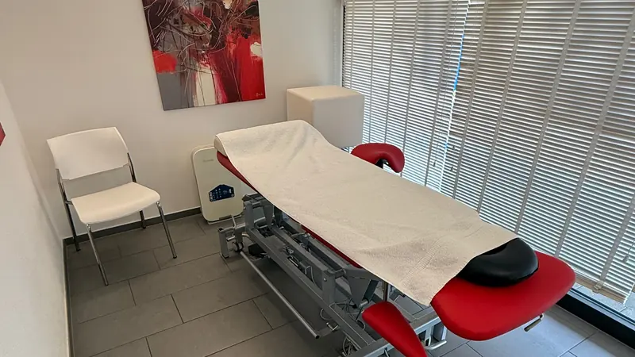
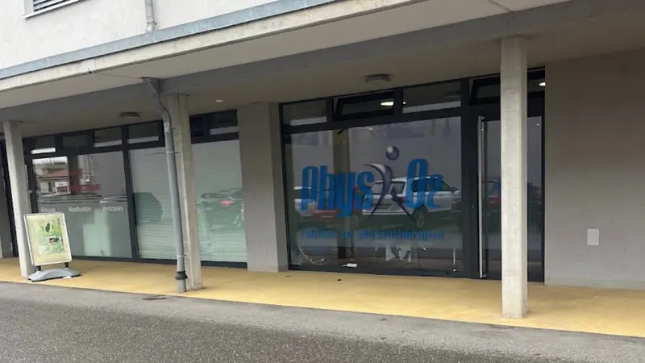
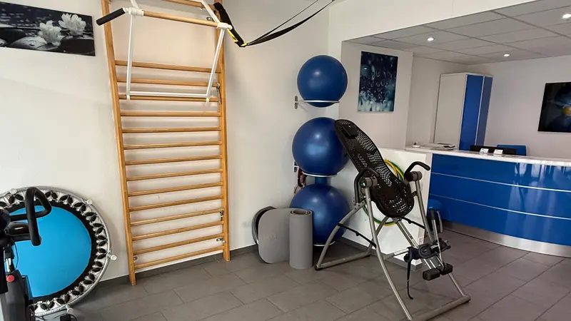
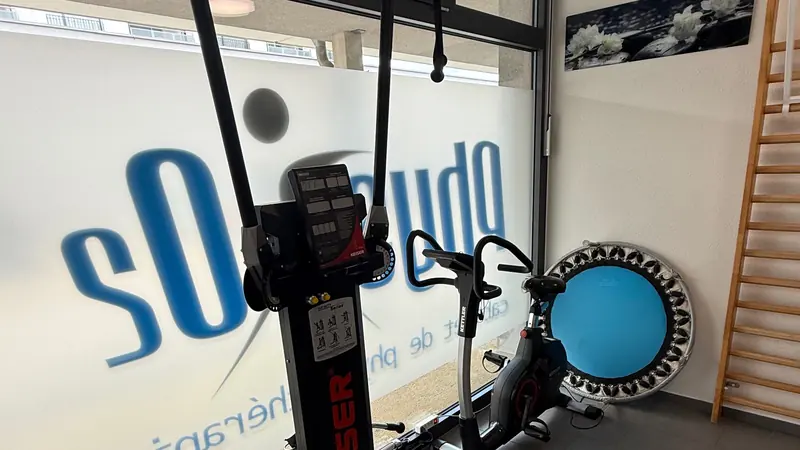
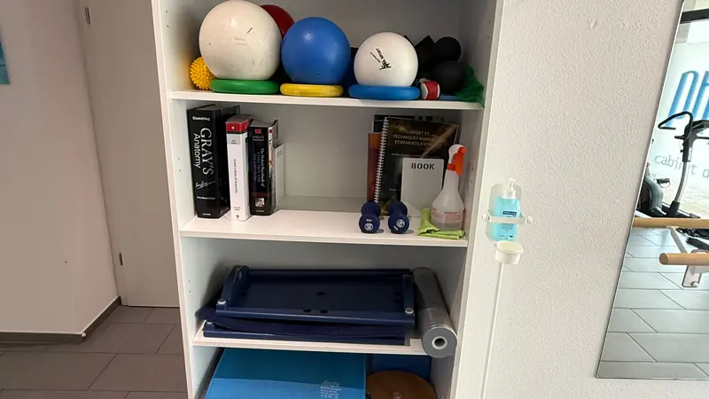

01
Thérapie manuelle
Techniques manuelles appliquées aux problématiques musculo-squelettiques et fonctionnelles, choisies après évaluation.
Physiothérapeute à Belfaux
Une approche moderne et personnalisée de la physiothérapie, fondée sur l'évaluation clinique, les connaissances scientifiques actuelles et les besoins spécifiques de chaque patient.

Cabinet
Route de Lossy 18A 1782 Belfaux
Expertises
Les domaines dans lesquels le cabinet intervient au quotidien, du trouble musculo-squelettique à la neuroréhabilitation.
01
Techniques manuelles appliquées aux problématiques musculo-squelettiques et fonctionnelles, choisies après évaluation.
02
Technique utilisée dans certaines prises en charge musculaires et myofasciales, lorsque son indication est pertinente.
03
Travail ciblé sur les points de tension musculaire, intégré à un traitement plus large lorsque la situation le justifie.
04
Approche adaptée aux problématiques neurologiques et à la neuroréhabilitation, avec des objectifs fonctionnels définis ensemble.
05
Accompagnement progressif après lésion musculaire ou ligamentaire, jusqu'à la reprise des activités.
06
Prise en charge des troubles de l'articulation temporo-mandibulaire et des difficultés liées à la mastication.
07
Suivi individualisé intégrant exercices spécifiques et travail postural selon la situation du patient.
08
Prise en charge au domicile du patient lorsque la situation le nécessite, selon les disponibilités du cabinet.
Prestations
Les motifs de consultation proposés au cabinet. La première séance débute par une évaluation complète permettant de définir ensemble un plan de traitement.
Les tarifs des séances de physiothérapie ne sont pas publiés sur cette page. Le cabinet vous renseigne directement lors de la prise de contact.
Prestations tarifées
Ces prestations peuvent compléter un suivi en physiothérapie ou être réservées séparément. Chaque séance est adaptée à la situation de la personne.
Travail manuel sur les tensions musculaires, la mobilité et le confort au quotidien. La durée est choisie selon l'étendue des zones à traiter.
Technique manuelle douce destinée notamment à soutenir la circulation lymphatique. Elle est utilisée selon l'indication, par exemple en cas de gonflements, de sensation de jambes lourdes ou dans un contexte de récupération.
Association d'un froid contrôlé et d'une compression intermittente, utilisée dans certains protocoles de récupération après une blessure, une intervention chirurgicale ou un effort sportif.
À propos
Kyriakos Petropoulakos est physiothérapeute, avec une expérience clinique et académique internationale dans les domaines musculo-squelettique, neurologique, cardiorespiratoire et de la douleur chronique.
Emplacement portrait Ajoutez ici la photographie professionnelle de Kyriakos Petropoulakos (format portrait, 4:5).
Titulaire d'un Master en Physiothérapie Avancée de l'University of Thessaly, il poursuit actuellement un doctorat au Département de Physiothérapie de la même université. Ses travaux portent notamment sur la douleur chronique, les méthodes de distraction thérapeutique, la neuroréhabilitation et les nouvelles technologies appliquées à la rééducation.
Sa pratique s'appuie sur des méthodes fondées sur les preuves scientifiques (evidence-based practice), combinées à une prise en charge personnalisée centrée sur le patient. L'objectif du suivi est défini avec la personne, en tenant compte de sa situation, de ses contraintes et de ses activités.
En parallèle de son activité clinique, il dispose d'une expérience universitaire en tant qu'enseignant et formateur en physiothérapie — neuroréhabilitation, électrothérapie, troubles musculo-squelettiques et physiothérapie cardiorespiratoire. Il est auteur et co-auteur de publications scientifiques internationales et a présenté ses travaux lors de congrès européens et internationaux.
Méthode
Comprendre précisément la situation, les limitations et les objectifs de la personne avant de définir un traitement.
Intégrer à la pratique clinique les méthodes actuelles et les données scientifiques pertinentes.
Construire une prise en charge adaptée aux besoins et aux objectifs individuels, ajustée au fil des séances.
Langues
Le cabinet
Un espace de traitement individuel et une salle d'exercices équipée, à quelques minutes de Fribourg.




Téléphone : 076 783 69 57
| Lundi | 07:30 – 09:3011:00 – 20:00 |
|---|---|
| Mardi | 07:30 – 17:30 |
| Mercredi | 09:00 – 20:00 |
| Jeudi | 07:30 – 09:3011:00 – 20:00 |
| Vendredi | 07:30 – 17:30 |
| Samedi | Fermé |
| Dimanche | Fermé |
Rendez-vous
Réservez votre prochaine consultation directement en ligne ou contactez le cabinet par WhatsApp.